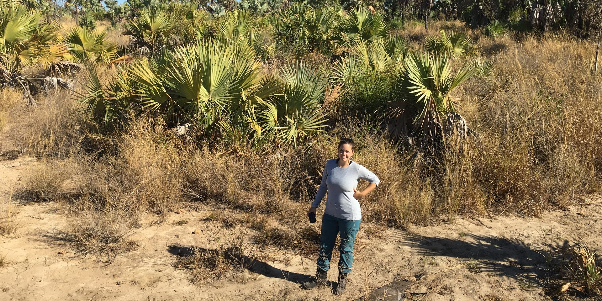
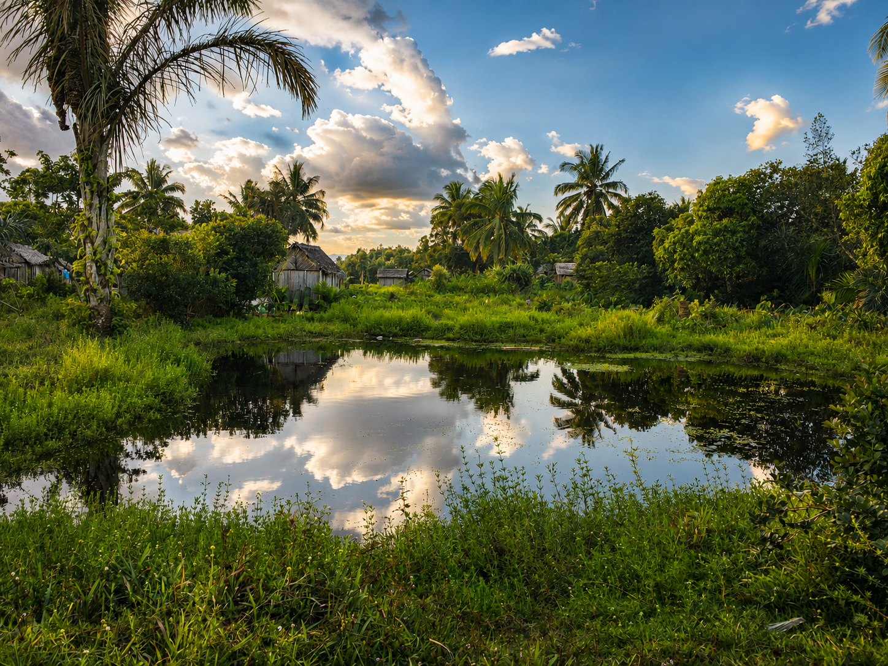
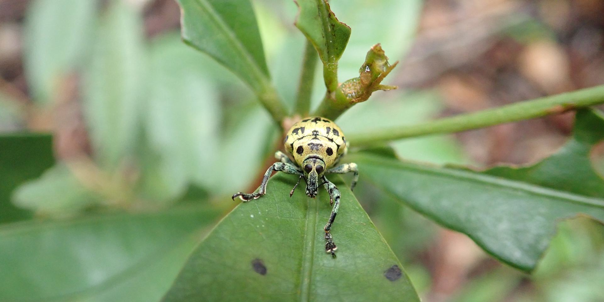
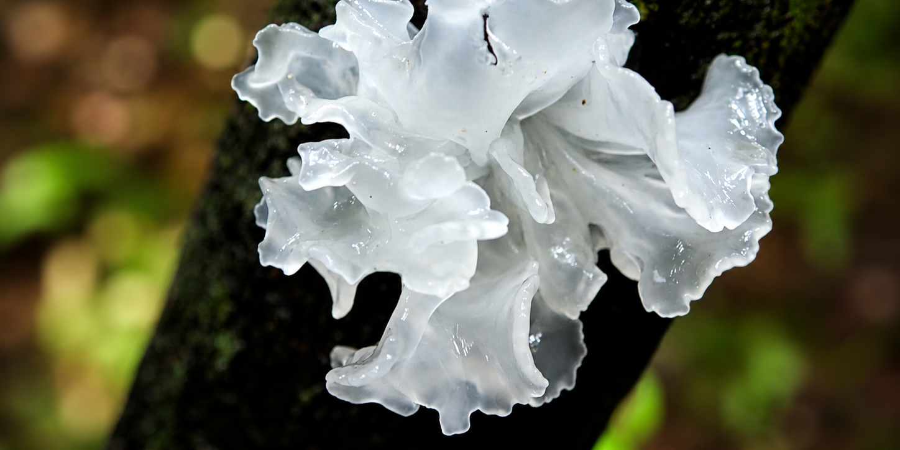

Sept 2025 — Present
Postdoctoral researcher and lecturer, University of Marburg
Biodiversity of Plants group, Department of Biology.





About me
I am an evolutionary biologist interested in understanding how biodiversity originates, evolves, and responds to environmental change. My research spans different scales, from genetic diversity of populations and species interactions, to macroevolution and global patterns of biodiversity.
I am currently a postdoctoral researcher and lecturer in the Biodiversity of Plants group at the University of Marburg, where I teach Data-driven biodiversity research and Phylogenetic inference to master students, and Evolution of plants and Analisys of botanical collections to bachelor students.
Sept 2025 — Present
Postdoctoral researcher and lecturer, University of Marburg
Biodiversity of Plants group, Department of Biology.
Aug 2024 — Aug 2025
Maternity leave
Jan 2024 — Aug 2024
Postdoctoral researcher, Helmholtz Centre for Environmental Research (UFZ), Halle
Flexpool project PaDRE, with Sonja Knapp, Erik Welk and Marten Winter.
Sept 2018 — Oct 2023
Doctoral researcher, iDiv Halle-Jena-Leipzig / University of Leipzig
With Dr. Renske E. Onstein and Prof. Dr. Alexandra N. Müllner-Riehl.
Jan 2016 — Sept 2016
Research assistant, National Museum of Natural Sciences (MNCN-CSIC), Madrid
Population genetics (microsatellites) of freshwater fish, the common midwife toad and the brown spiny lobster.
Aug 2015 - Dec 2015
Research assistant, University of South-Eastern Norway, Bø i Telemark
Tick-borne pathogens and tick distribution along an altitudinal gradient.
Sept 2018 - Oct 2023
PhD in Biology (Magna cum laude), University of Leipzig and iDiv
Signatures of the megafrugivore extinction on palms with large fruits in Madagascar. External reviewer: Prof. Dr. Anna Traveset.
Oct 2016 - Oct 2017
MSc in Biodiversity and Conservation Biology, Pablo de Olavide University, Seville
Thesis at MNCN-CSIC Madrid on the Iberian populations of the freshwater blenny Salaria fluviatilis. With Dr. Anabel Perdices and Dr. Annie Machordom.
Sept 2009 - July 2015
BSc in Biology, Autonomous University of Madrid
Erasmus year at the University of South-Eastern Norway, specialising in alpine biodiversity and environmental management.
Published with GitHub Pages